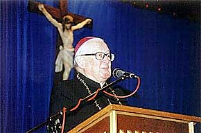

|
Autor: tak, Korso, 2004
PREZENT NA URODZINY Dwa tygodnie temu, w 90. rocznicê urodzin ksiêdza biskupa Ignacego Je¿a, w Radomyœlu Wielkim odby³a siê niecodzienna uroczystoœæ. Ksi¹dz biskup Ignacy Je¿ Ordynariusz Diecezji Koszaliñski – Ko³obrzeskiej otrzyma³ od swoich rodaków tytu³ Honorowego Obywatela Miasta i Gminy.  Rodakowi rodacy Uroczystoœci rozpoczê³y siê od Mszy œw. w miejscowym koœciele parafialnym. Modlono siê przede wszystkim w intencji zdrowia i d³ugich lat ¿ycia dla ks. biskupa. W uroczystoœciach udzia³ wziêli nie tylko licznie przybyli mieszkañcy, ale tak¿e w³adze samorz¹dowe z burmistrzem Józefem Rybiñskim na czele. 31 lipca 1914 roku w rodzinie Jana Je¿a i Jadwigi z domu Liszkowej przyszed³ na œwiat syn Ignacy Ludwik. Trzy tygodnie póŸniej, 22 sierpnia zosta³ ochrzczony przez ks. proboszcza Antoniego Pasiuta w koœciele parafialnym w Radomyœlu Wielkim, przy zabytkowej barokowej chrzecielnicy, znajduj¹cej siê do dziœ w nawie koœcio³a Matki Bo¿ej Niepokalanie Poczêtej. Rodzicami chrzestnymi byli W³adys³aw Czu³kowski i Wincenta D¹browska. Ojciec Ignacego – Jan pe³ni³ wówczas funkcjê kanclerza s¹dowego w S¹dzie Powiatowym po³o¿onym przy ulicy Tarnowskiej w Radomyœlu. Wczesne dzieciñstwo przysz³ego biskupa Ignacego przypad³o na okres I wojny œwiatowej. W miasteczku toczy³y siê wówczas walki pomiêdzy wojskami austriackimi i rosyjskim. Radomyœl by³ dwukrotnie zdobywany i okupowany przez wojska rosyjskie; 25 wrzeœnia do 1 paŸdziernika 1914 r. i od 9 listopada 1914 r. do 11 maja 1915 r. Po zakoñczeniu I wojny œwiatowej rodzina Je¿ów przenios³a siê z Radomyœla do Ostrowa Wielkopolskiego, a nastêpnie w 1923 r. do Katowic, gdzie w latach 1924 – 1932 kszta³ci³ siê ich syn w katowickim klasycznym Gimnazjum pañstwowym im. Adama Mickiewicza. 31 maja 1932 r. uzyska³ œwiadectwo dojrza³oœci, po czym wst¹pi³ do Œl¹skiego Wy¿szego Seminarium Duchownego w Krakowie, studiuj¹c równoczeœnie na Wydziale Teologicznym Uniwersytetu Jagielloñskiego. 13 lipca otrzyma³ stopieñ magistra teologii z zakresu Historii Koœcio³a na podstawie pracy ,,Z przesz³oœci parafii piekarskiej”. Œwiêcenia kap³añskie przyj¹³ 20 czerwca 1937 r. w prokatedrze œw. Piotra i Paw³a w Katowicach po uzyskaniu wczesnej dyspensy z Watykanu, bowiem do koniecznego wieku œwiêceñ brakowa³o mu ponad rok. Szafarzem œwiêceñ by³ ks. bp. Stanis³aw Adamski. W latach 1937 – 1942 by³ wikariuszem w parafii Wniebowziêcia NMP w Hajdukach Wielkich i równoczeœnie od 1937 do 1939 r. kapelanem, hufca mêskiego ZHP w Œwiêtoch³owicach. Tu zasta³a go okupacja. W tym czasie zosta³ aresztowany i zamordowany w Dachau ks. Józef Czepiel, dziekan i proboszcz hajduskiej parafii. Ksi¹dz Ignacy Je¿ odprawi³ za swego proboszcza Mszê œw. ¿a³obn¹, w której uczestniczy³o wielu parafian. Za tê ,,przys³ugê” zosta³ 17 sierpnia 1942 r. aresztowany i wiêziony najpierw w Katowicach, a po miesi¹cu wywieziony do obozu koncentracyjnego w Dachau, gdzie otrzyma³ numer obozowy 37196. W obozie zachorowa³ na tyfus, a kiedy wyzdrowia³, w grudniu 1944 r. sam zg³osi³ siê do pracy na blok, w którym przebywali wiêŸniowie zara¿eni tyfusem. Tu opiekowa³ siê chorymi i z wielkim poœwiêceniem pe³ni³ pos³ugê kap³añsk¹. W obozie spotka³ Ojca Józefa Kentenicha, za³o¿yciela Ruchu Szensztackiego oraz innych jego zwolenników, ksiê¿y, którzy zostali wywiezieni do Dachau za to, ¿e za³o¿enia Ruchu by³y skierowane przeciwko totalizmowi hitlerowskiemu. Tam te¿ poœwiêci³ siê Matce Bo¿ej Trzykroæ Przedziwnej, czczonej w kaplicach szensztackich. Jedn¹ z najwa¿niejszych myœli o. Kentenicha by³o ca³kowite zaufanie Bo¿ej Opatrznoœci. Has³em, które wysz³o z Ruchu Szensztackiego, by³a ,,Œwiêtoœæ na co dzieñ”. Te s³owa zdaniem radomyœlan najlepiej opisuj¹ ksiêdza Ignacego Je¿a, którego uwa¿aj¹ za swój wzór. Miros³aw Wnuk © 2006-2004 |